CAD / CFD / Testing
MQL Project
Design of MQL Experiment Setup and CFD Analysis
- My contribution
- Experimental setup and nozzle design
- Status / Period
- Completed · Jan 2025
2 min read · Manufacturing
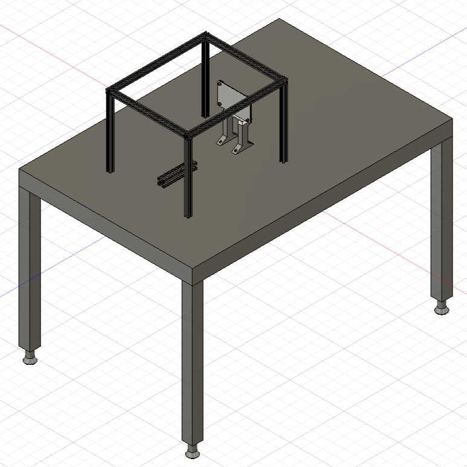
Project Overview
Minimum Quantity Lubrication (MQL) is used for lowering lubrication use in turning, milling and CNC operations. It is designed to spray the lubrication which enough to be cooler the operation. This project is offered by our Instractor so that they allow us to study and work on this project under the Laboratory in the Mechanical Faculty.
Challenge
The primary challenge was designing a low-cost, agile quadruped robot for search-and-rescue operations in indoor environments (e.g., collapsed buildings). Existing solutions prioritized expensive components or lacked modularity, limiting scalability. Key hurdles included:
-
Designing the test environment
-
Designing the nozzles to test different outputs
-
Measuring the heat changes
Solution
-
Nozzle setup and sheet metal is placed with variable distance
-
Supports are designed and 3D printed using PLA and fixed on the desk with sheet plate
-
For testing, new nozzles are designed and 3D printed using SLA material
-
ANSYS Fluent CFD is simulated for Nozzles to compare with real-life results
Engineering Process
Firstly, system was clear and nozzle system was ready with compressor and MQL insturment. So, I was asked to design the experiment setup and fixed everything on the desk and use 20mm t-slot frames to cover the setup.


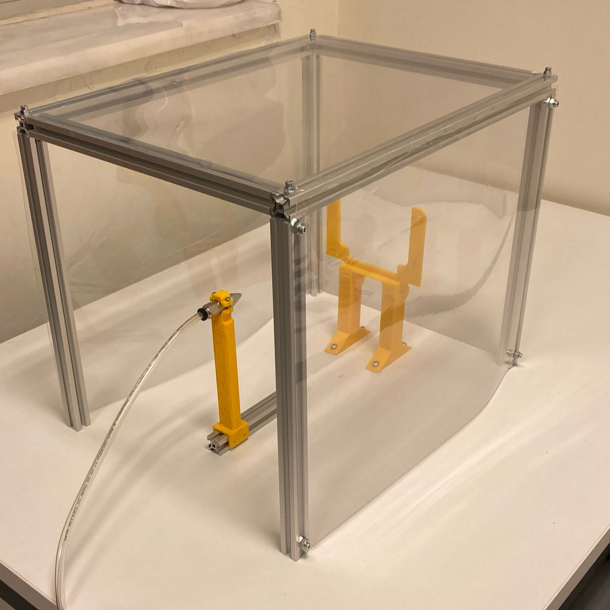
Since the experiment setup was done, now I asked to design nozzles to experiment different spraying and result with different cooling time and spraying area


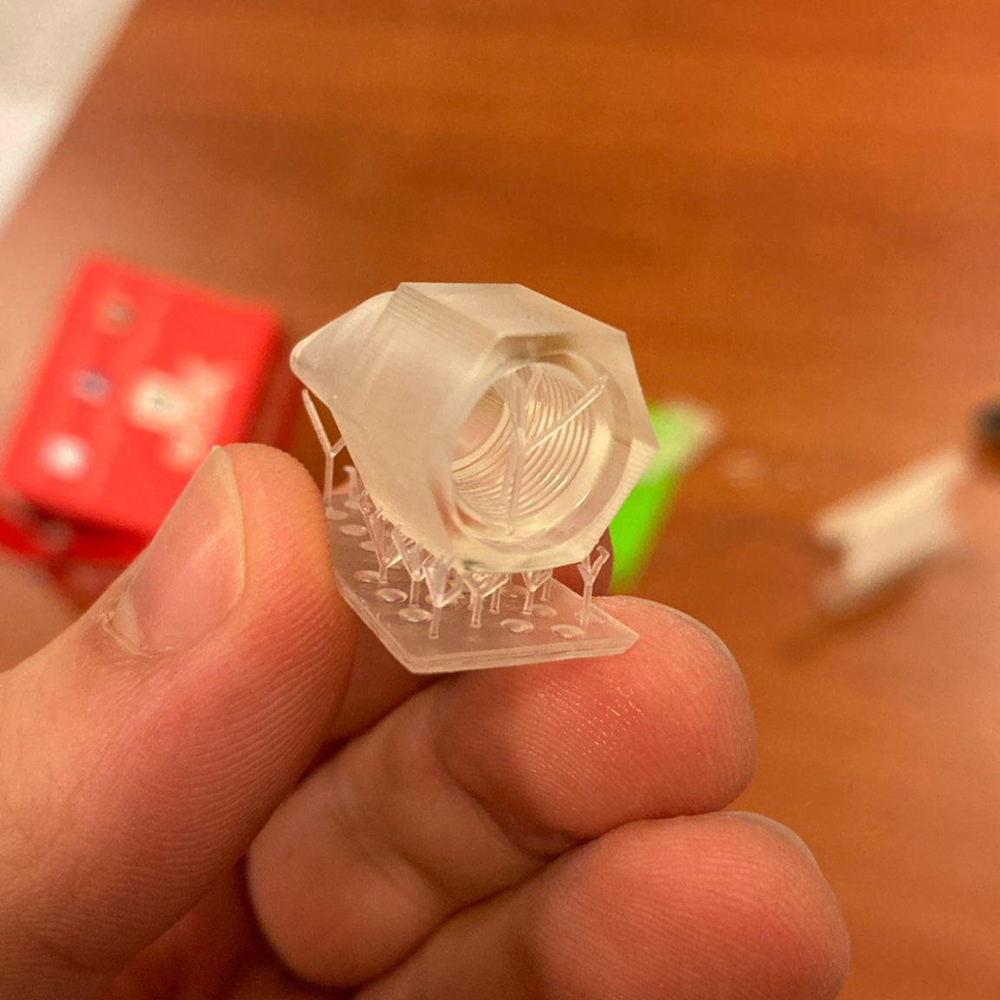
After all these real-time experimentings, CFD analysis held as well. Here, I designed two little different nozzles especially they are different on their tip side, and see how they react under CFD Simulation using ANSYS. This CFD held as 2D since i take crossection of the nozzles.

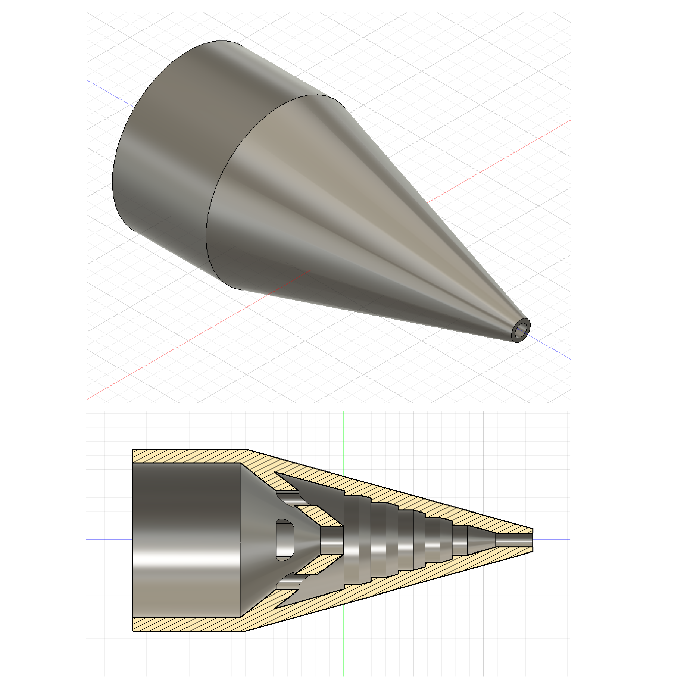

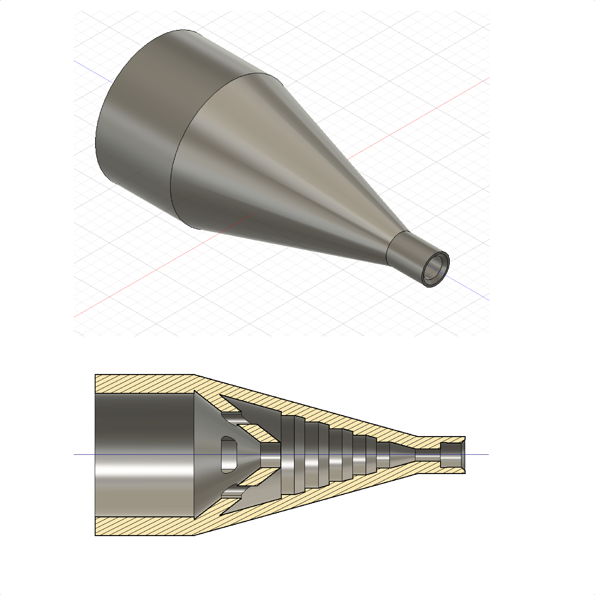

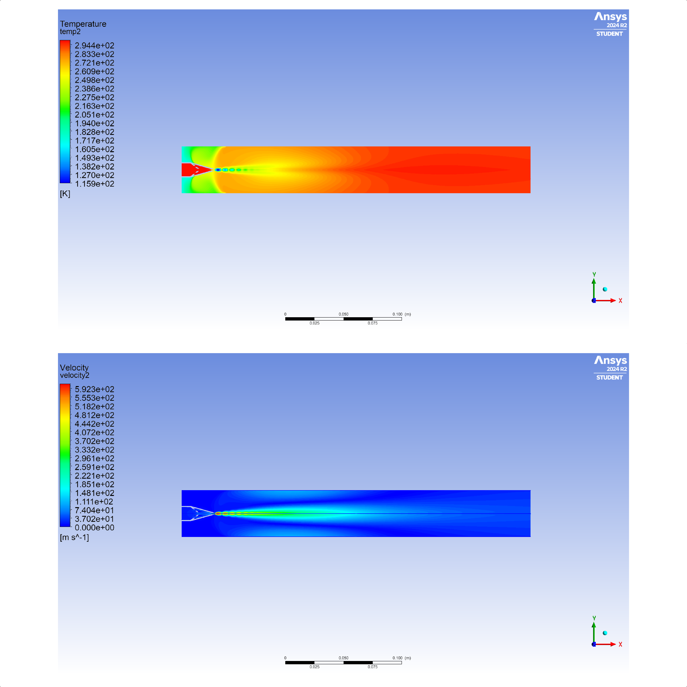

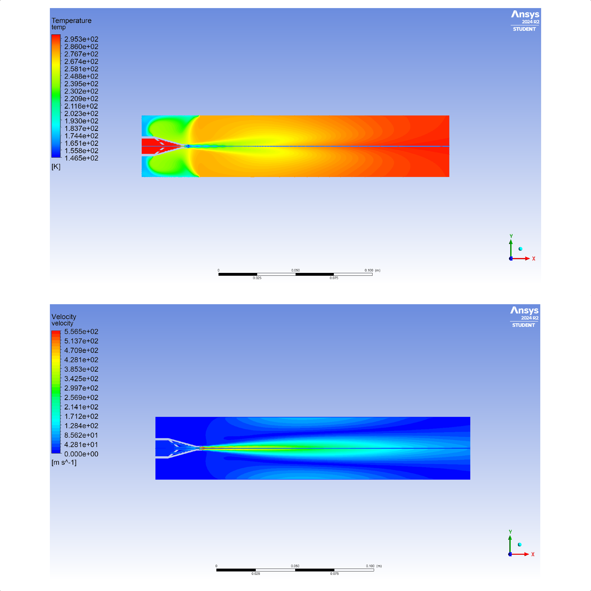
Results
-
Heat change is measured using Thermocuples and Nozzles are Tested
-
CFD analysis held for the Nozzles and results are compared with real life experiments
-
Experiment setup designed
Project timeline
| Stage | Period |
|---|---|
| Research & Design | Oct 2024 - Jan 2025 |
| Simulating | Nov 2025 - Dec 2025 |
| Finalizing | Feb 2025 |
Project gallery

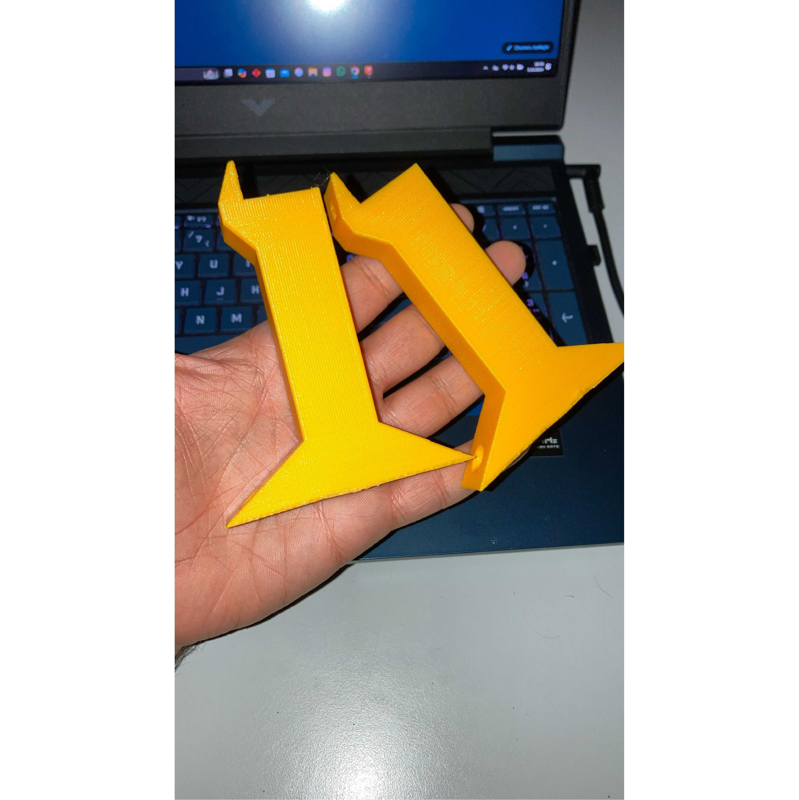

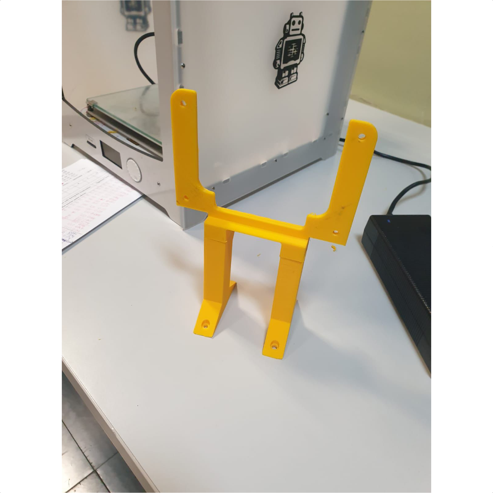

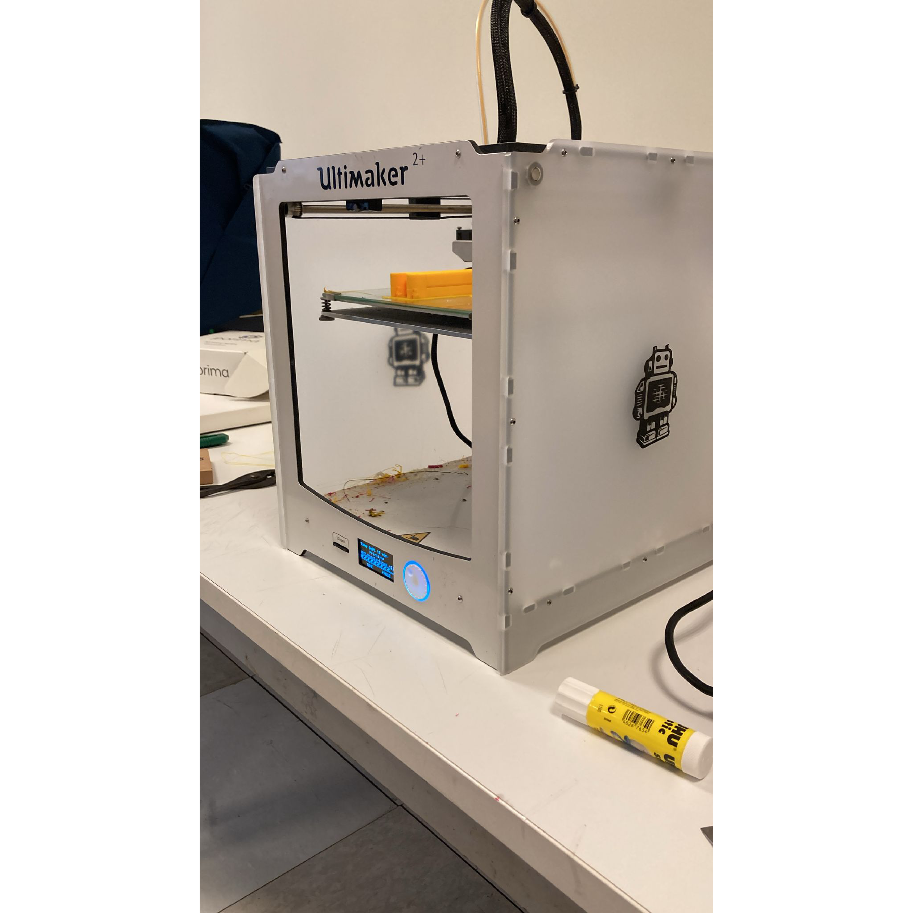

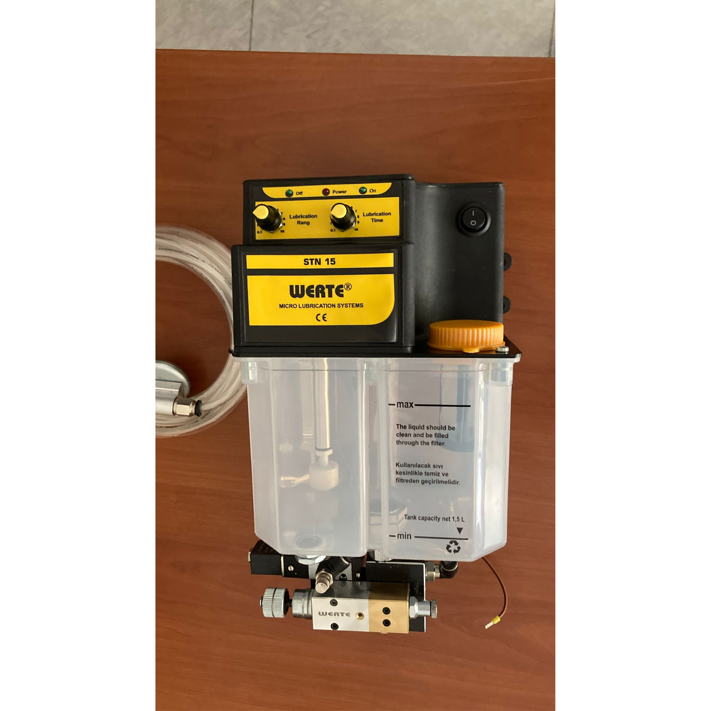
Tools & methods
- SolidWorks
- Fusion 360
- ANSYS CFD
- Finite Element Analysis
- Lab Work